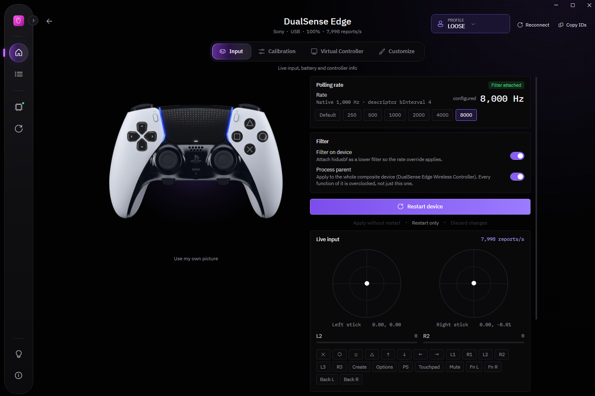

These are real HIDUSBF screens. Pick a tab to look around.
HIDUSBF / Real screenshots

Input: the polling rate, the filter switches and live stick readings.Real app screenshot
Taken with one DualSense Edge on an earlier version, so your window may look a little different. The numbers are from that controller and aren't a promise of what yours will do. This website can't see or change your devices.
02 / What it does
What you can change.
Polling rate is for USB mice, keyboards and controllers. The other tools are mainly for PlayStation controllers.
01 — Polling rate
Set how often your device reports.
Polling rate is how many times a second a USB device sends its input to your PC. Choose 250, 500, 1000, 2000, 4000 or 8000 Hz for a mouse, keyboard or controller. HIDUSBF sets up SweetLow's hidusbf driver, and you restart the device from the same page.
Not every device can keep up. A PlayStation controller on a USB cable shows the reports per second it really sends, so you can check.
Correct a stick's center, teach the controller each stick's full range, or adjust the stored values by hand. Smart calibration measures both sticks again, then sets the feel to Loose, Natural or Tight.
Changes stay temporary until you save them, and a snapshot is kept each time the controller connects, so you can go back. It needs a USB cable, and it can't repair a worn or damaged stick.
Games can see a virtual Xbox 360 or DualShock 4 controller, with your own response curve on each stick. Pick a curve or drag two handles to make one, set how strong it is, and compare what you do with what the game gets on a live graph.
The two free drivers it needs are installed for you the first time you use it.
On a supported PlayStation controller you can set the light bar, player LEDs and mute LED, add resistance to L2 and R2, and test the rumble. A SteelSeries Apex Pro TKL Gen 3 keyboard gets per-key lighting.
Lights and trigger resistance are saved in a profile and come back each time the controller connects. Steam or a game can still change them while it runs.
Keep different setups for one controller and switch between them from the top of its page.
Devices by name
An overview of what's plugged in, with product names and pictures where available, not just USB IDs.
Your own look
Choose an accent color and a window scale, and turn off animations with Reduce motion.
Start-up and tray
Start with Windows if you like. Closing the window keeps HIDUSBF in the tray so lighting stays on.
03 / Install
Three steps.
You'll need administrator rights, because HIDUSBF installs a driver.
1
Run the installer
It adds HIDUSBF to Program Files and the Start menu. The installer isn't code-signed yet, so if SmartScreen warns you, choose More info, then Run anyway.
2
Open HIDUSBF
Say yes when Windows asks for permission. HIDUSBF installs the driver itself, then offers a short tour.
3
Pick a device and a rate
Open the device, turn on the filter, choose a rate and press Restart device. If the rate doesn't change, re-plug it or reboot.
Good to know
Before you download.
Shopping for a controller?
Hall effect, TMR, JS13, 3-pin or 5-pin: our guide explains the labels and keeps measured results apart from maker claims.
Genuine DualSense and DualSense Edge controllers get center, range, fine-tune and Smart calibration. DualShock 4 (V1 and V2) gets center and range. Clones aren't supported. Xbox, Nintendo, GameSir, SCUF and other controllers get the polling rate only.
Will my device reach 8,000 Hz?+
Not always. It depends on the device, your USB controller and Windows. Rates above 1,000 Hz need Memory Integrity turned off. That's a Windows security setting, so decide whether the change is worth it for you. A higher rate means more frequent reports. It doesn't guarantee lower input lag or a faster sensor.
Does calibration stick on a DualSense Edge?+
It may not. Edge support is experimental, because its stick modules have their own memory. Without a hardware write-protect mod, a saved calibration may not survive a module swap or a restart.
Does the virtual controller work with Steam?+
Turn off PlayStation Controller Support in Steam's controller settings while it runs, or Steam will read the real controller as well. Games that were already open need a restart after you turn on hiding for the real controller.
How do I check the download?+
Each release on GitHub has a .sha256 file next to the installer. Compare it with the file you downloaded.
How do I update?+
Download the newest installer from this page and run it.
How do I remove it completely?+
Open Settings, go to Driver and choose Uninstall driver. That turns the filter off on every device, then removes the driver. Do this first, because uninstalling the app on its own leaves the driver in place.
Does it send anything from my PC?+
Each start sends a random install ID, the HIDUSBF version and channel, the Windows build, the display language and whether an update just installed. Turn that off in Settings, under Updates. HIDUSBF can also download product pictures from manufacturers' websites, which you can turn off under Pictures.
Your next step
Try it on your own setup.
HIDUSBF is free. Plug in your device, install the app and see what it can do.